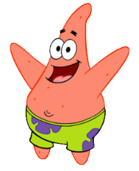
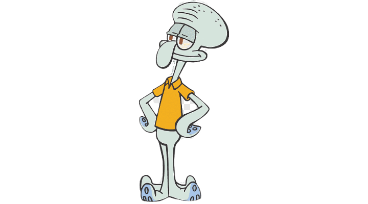
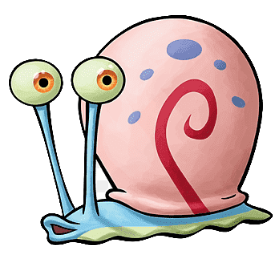
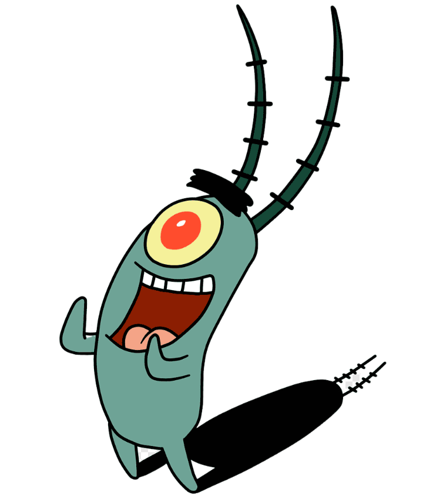
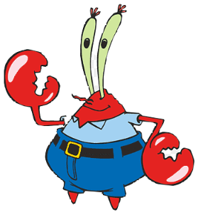

Aqui estão alguns dos personagens do desenho:
.png)
Bob Esponja é uma esponja marinha bondosa, otimista, alegre, ingênua e amigável que mora na cidade submarina da Fenda do Biquíni juntamente com diversas criaturas antropomórficas. Bob trabalha como cozinheiro no "Krusty Krab" (ou "Siri Cascudo", na versão em português), um dos principais restaurantes de fast-food da região, com seu chefe Eugene H. Sirigueijo e seu também esnobe vizinho Lula Molusco.[5] Nas horas vagas, Bob Esponja se diverte "caçando água viva", praticando caratê ou até mesmo soltando bolhas de sabão.[5]

Patrick é o melhor amigo ignorante, mas muito bem-humorado de Bob Esponja. Ele é retratado como uma estrela do mar rosa com sobrepeso, que serve como o idiota da cidade subaquática de Fenda do Bikini [1]. Patrick fica mais imbecil ao longo da série e tem demonstrado cometer muitos erros ridículos. Apesar disso, ele foi ocasionalmente retratado como um sábio, com observância articulada a certos assuntos em detalhes específicos. No entanto, ele sempre volta rapidamente ao seu eu habitual e pouco inteligente depois de demonstrar um momento de sabedoria. Ele não possui nenhuma forma de ocupação, exceto por várias passagens muito breves trabalhando no Siri Cascudo e no Balde de Lixo em várias posições e, principalmente, passa seu tempo brincando com Bob Esponja, pegando água-viva com ele ou descansando sob a rocha sob a qual ele reside.

Squidward é retratado como um polvo de coloração turquesa que é amargo, muito infeliz, desesperado, um pouco deprimido, brusco, arrogante e ocasionalmente egoísta. Ele mora em um moai localizado na cidade subaquática Bikini Bottom e situado entre as residências de SpongeBob e Patrick.[4][5] Squidward detesta seus vizinhos por causa das risadas perpétuas e do comportamento barulhento. Embora SpongeBob e Patrick não possuam consciência da animosidade de Squidward, consideram-no um amigo.[6] No entanto, existem momentos em que pelo menos um deles fica levemente ciente disso, em especial no episódio "SB-129", quando Patrick suspeitava e começava a acreditar que a aversão era real.

Gary é um caracol marinho com uma concha rosa com manchas azuis arroxeadas e uma espiral vermelha. Ele tem antenas oculares que unem seus olhos verde-escarlate com pupilas vermelho-alaranjadas. Os lados de seu corpo são azul claro e sua barriga é verde. Ele é conhecido por criar trilhas de lodo durante o rastreamento.

Plâncton, no universo de Bob Esponja Calça Quadrada, é um copépode pequeno e verde, o proprietário do restaurante "Chum Bucket", que é o rival do Krusty Krab. Ele é o principal antagonista da série e está constantemente a tentar roubar a fórmula secreta do Hambúrguer de Siri, que o Sr. Siriguejo, o proprietário do Krusty Krab, guarda com carinho.

O Mr. Krabs é o proprietário e gerente do restaurante de fast food Krusty Krab, local onde SpongeBob e Squidward Tentacles trabalham como cozinheiro e caixa, respectivamente.[3][4] O estabelecimento é famoso por servir o sanduíche Krabby Patty, cuja fórmula é um segredo comercial bem guardado. O gosto renomado dos sanduíches atrai clientes do Bikini Bottom, transformando o Krusty Krab em um negócio bem-sucedido.[5] Krabs frequentemente explora a popularidade do estabelecimento, aumentando abusivamente os preços dos produtos e cobrando de seus próprios funcionários pelo uso dos serviços do edifício.
Voltar